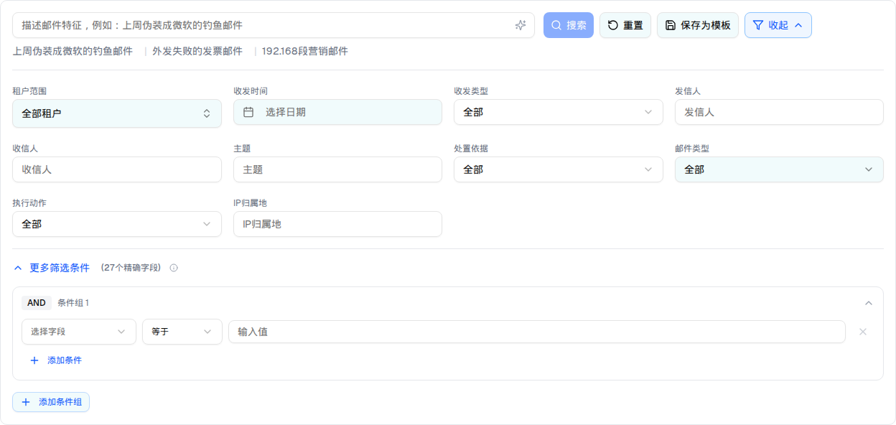

预览与截图
可切换条件组的 AND/OR、打开「选择字段」下拉（27 项，分 3 组）、添加/删除条件行
||

展开后出现「条件组 1」（默认 AND，1 个空条件行）+ 「添加条件」+ 「添加条件组」。
27 个字段（3 组）
| 分组 | 字段（value → 标签） |
|---|
| 邮件基本信息（11） | headerSender 信头发信人 · envelopeSender 信封发信人 · headerRecipient 信头收信人 · envelopeRecipient 信封收信人 · displayName 发信人显示名 · sendHour 发信小时（00:00–23:00 下拉） · emailSize 邮件大小 · senderIp 发信IP · recipientDomain 收信域名 · tid TID · cluster 集群（Cluster 1/2/3 下拉） |
| 附件相关（5） | attachmentCount 附件数量 · attachmentTotalSize 附件总大小 · attachmentType 附件类型 · attachmentName 附件名称 · attachmentMd5 附件MD5 |
| 安全检测（13） | spfResult（Pass/Fail/Softfail/Neutral/None） · dkimResult（Pass/Fail/None） · dmarcResult（Pass/Fail/None） · ptrResult（匹配/不匹配/无记录） · similarDomain（触发/未触发） · displayNameDetect（异常/正常） · mailFromEmpty（是/否） · virusScanResult（检出/未检出/异常） · intentEngineResult（高危/中危/低危/正常意图） · qrCodeResult（检出恶意URL/检出可疑内容/正常） · urlResult（恶意/可疑/正常） · keywordHit 内容关键词命中（自由输入） · rblResult（黑名单/白名单/未命中） |
⚠ 标题写「27个精确字段」，实际渲染 11 + 5 + 13 = 29 个字段（PRD 也自相矛盾：安全检测组说 14 个但列了 15 行）。demo 的安全检测组比 PRD 少了 threatLevel（威胁等级）与 intentLabel（意图标签）。
条件运算符（13 种）
exact 等于 · notEqual 不等于 · contains 包含 · notContains 不包含 · startsWith 开头是 · endsWith 结尾是 · regex 正则匹配 · isEmpty 为空 · greaterThan 大于 · lessThan 小于 · between 范围内 · belongsTo 属于 · notBelongsTo 不属于（默认 exact）
条件组交互
| 元素 | 行为 |
|---|
| AND / OR 徽标 | 点击在 AND ↔ OR 之间切换（组内条件的连接方式） |
| 折叠箭头 | 折叠/展开该条件组的条件行 |
| 值输入 | 枚举字段（spf/dkim/dmarc/ptr/…/cluster/sendHour）渲染为 Select；其余渲染为文本 Input（占位符「输入值」） |
| 删除条件（X） | 组内只剩 1 条时 disabled |
| 添加条件 / 添加条件组 | 组内追加条件行 / 追加新条件组（新组默认 AND） |
| 过滤生效 | ❌ 条件组完全不参与过滤 —— conditionGroups 只存在于组件内部 state，从未传给 onFilterChange，「搜索」也不读它 |
DOM 树比对结果
| 比对项 | demo 实际 DOM | 提取的 HTML | 是否一致 |
|---|
| 根节点 | div.bg-white.mx-4.my-3（搜索区，展开更多筛选后） | 同 | 一致 |
| 后代节点数 | 134（默认 102 + 32） | 134 | 一致 |
| 条件组数 | 1（"条件组 1"，AND） | 1 | 一致 |
| 条件行数 | 1（字段/运算符/值/删除 四控件） | 1 | 一致 |
| 字段下拉选项数 | 29 个字段 + 3 个 disabled 分组标题 | 同（选项列表随预览一并提取） | 一致 |
| 删除按钮 | disabled（组内仅 1 条） | 同 | 一致 |